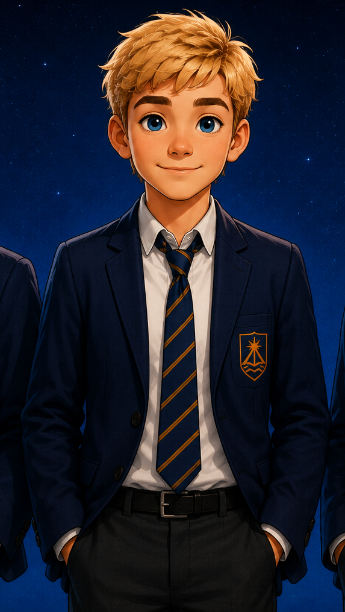

AGE
Eleven
Curious, energetic and determined to discover what lies around the next corner.

SUPPORTING CHARACTER
“Someone has to go first. It might as well be me.”
Eleven years old. Curious, determined and eager to prove that being younger doesn't stop you from joining the adventure. Tim has a knack for asking exactly the questions everyone else has forgotten to ask.
WHO IS TIM?
Tim Dawson has an endless curiosity about the world around him. Whether he's following clues, exploring somewhere new or helping his friends solve a mystery, he's happiest when every day brings something unexpected.
Although he isn't the loudest member of the group, Tim is quietly determined and rarely gives up once he's decided something is worth doing. His kindness and honesty quickly earn the trust of the people around him.
Tim proves that courage doesn't always arrive with noise or attention. Sometimes it simply means taking one more step when everyone else has stopped.
AT A GLANCE
AGE
Curious, energetic and determined to discover what lies around the next corner.
PERSONALITY
Tim rarely gives up. Once he believes something is worth doing, he'll see it through to the end.
GREATEST STRENGTH
Tim notices details that other people often overlook and enjoys discovering how things really work.
BEST QUALITY
Whether someone needs encouragement or an extra pair of hands, Tim is usually one of the first to volunteer.
STORY APPEARANCES
Jake is the narrator and central character of the This Is My... series.
THE TEAM BESIDE HIM
Tim may be the youngest of the group, but he never faces a challenge alone. Together with his brothers and their friend, every mystery becomes an adventure waiting to happen.

OLDER BROTHER
Daniel helps keep the group focused and is someone Tim knows he can always rely on when things become difficult.
BROTHER
Ben shares Tim's enthusiasm for new adventures and is usually the first to suggest exploring somewhere new.
FRIEND
Luca completes the group, proving that the best adventures are shared with trusted friends.
EVERY ADVENTURE BEGINS WITH CURIOSITY
Although Tim is one of the youngest members of the group, he refuses to let that hold him back. His curiosity, determination and willingness to help mean he often contributes far more than people expect.
Meet the Rest of the Cast